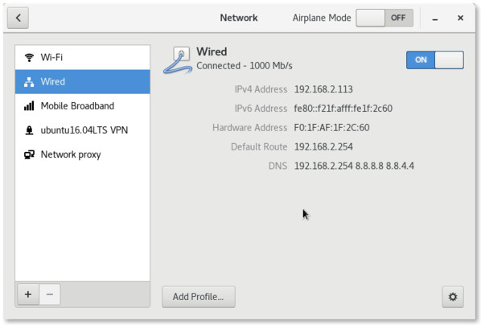
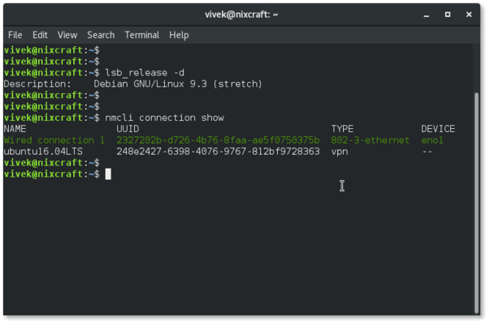
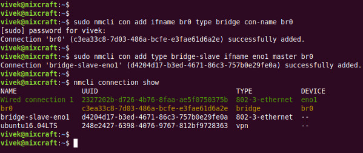
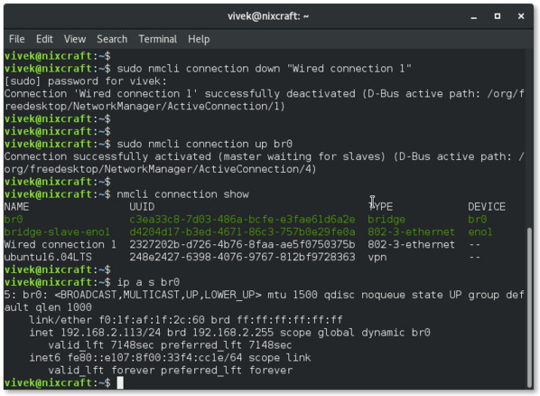

How to add network bridge with nmcli (NetworkManager) on Linux
I am using Debian Linux 9 “stretch” on the desktop. I would like to create network bridge with NetworkManager. But, I am unable to find the option to add br0. How can I create or add network bridge with nmcli for NetworkManager on Linux?
A bridge is nothing but a device which joins two local networks into one network. It works at the data link layer, i.e., layer 2 of the OSI model. Network bridge often used with virtualization and other software. Disabling NetworkManager for a simple bridge especially on Linux Laptop/desktop doesn’t make any sense. The nmcli tool can create Persistent bridge configuration without editing any files. This page shows how to create a bridge interface using the Network Manager command line tool called nmcli.
How to create/add network bridge with nmcli
The procedure to add a bridge interface on Linux is as follows when you want to use Network Manager:
Let us see how to create a bridge, named br0 in details.
Get current network config
You can view connection from the Network Manager GUI in settings:

Another option is to type the following command:
$ nmcli con show
$ nmcli connection show --active

I have a “Wired connection 1” which uses the eno1 Ethernet interface. My system has a VPN interface too. I am going to setup a bridge interface named br0 and add, (or enslave) an interface to eno1.
How to create a bridge, named br0
$ sudo nmcli con add ifname br0 type bridge con-name br0
$ sudo nmcli con add type bridge-slave ifname eno1 master br0
$ nmcli connection show

You can disable STP too:
$ sudo nmcli con modify br0 bridge.stp no
$ nmcli con show
$ nmcli -f bridge con show br0
The last command shows the bridge settings including disabled STP:
bridge.mac-address: --
bridge.stp: no
bridge.priority: 32768
bridge.forward-delay: 15
bridge.hello-time: 2
bridge.max-age: 20
bridge.ageing-time: 300
bridge.multicast-snooping: yes
How to turn on bridge interface
You must turn off “Wired connection 1” and turn on br0:
$ sudo nmcli con down "Wired connection 1"
$ sudo nmcli con up br0
$ nmcli con show
Use ip command to view the IP settings:
$ ip a s
$ ip a s br0

Optional: How to use br0 with KVM
Now you can connect VMs (virtual machine) created with KVM/VirtualBox/VMware workstation to a network directly without using NAT. Create a file named br0.xml for KVM using vi command or cat command:
$ cat /tmp/br0.xml
Append the following code:
<network>
<name>br0</name>
<forward mode="bridge"/>
<bridge name="br0" />
</network>
Run virsh command as follows:
# virsh net-define /tmp/br0.xml
# virsh net-start br0
# virsh net-autostart br0
# virsh net-list --all
Sample outputs:
Name State Autostart Persistent
----------------------------------------------------------
br0 active yes yes
default inactive no yes
For more info read the following man page:
$ man ip
$ man nmcli